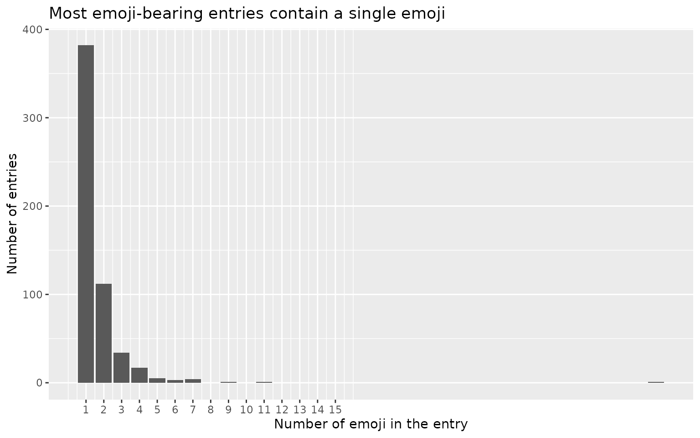
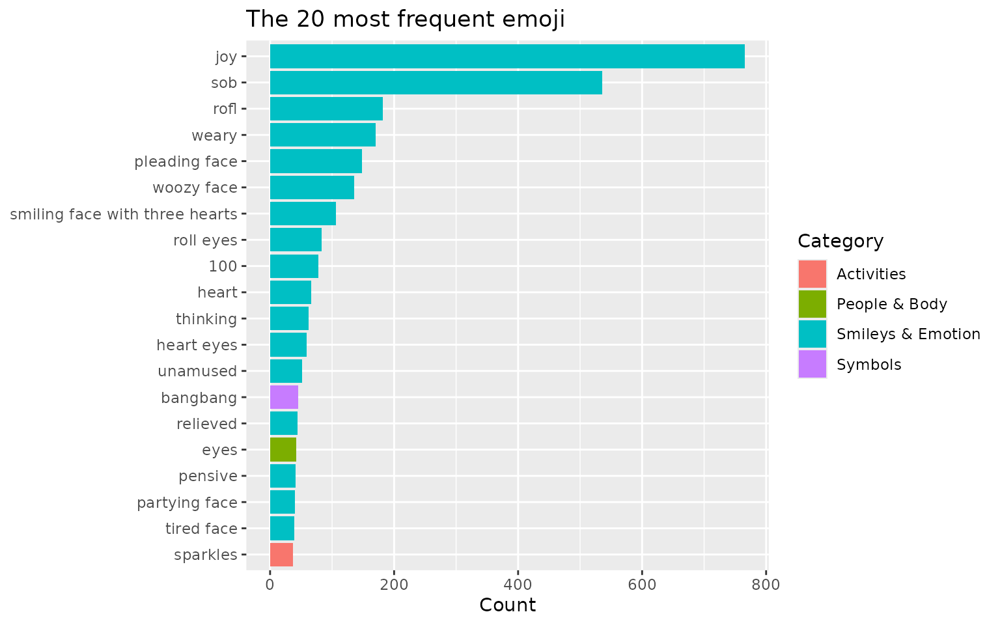
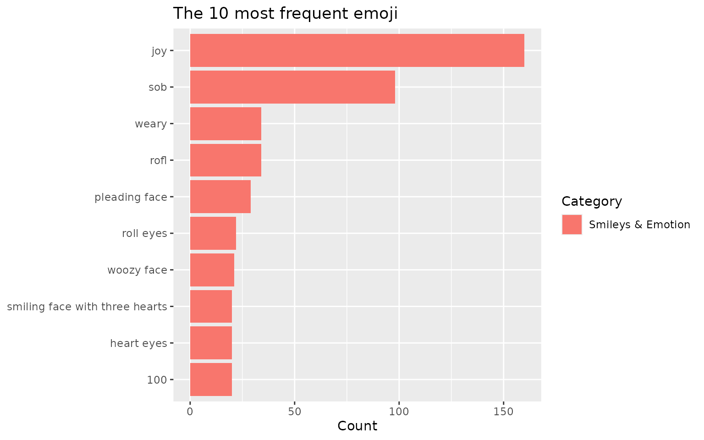
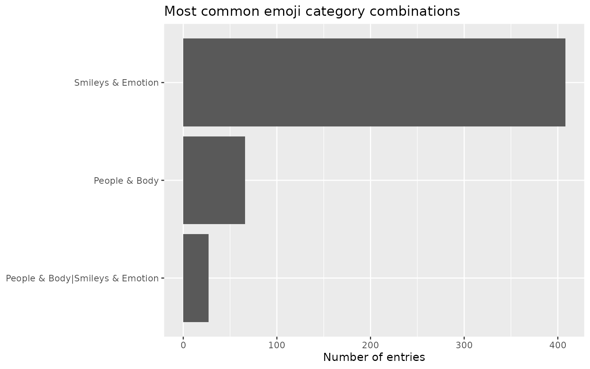
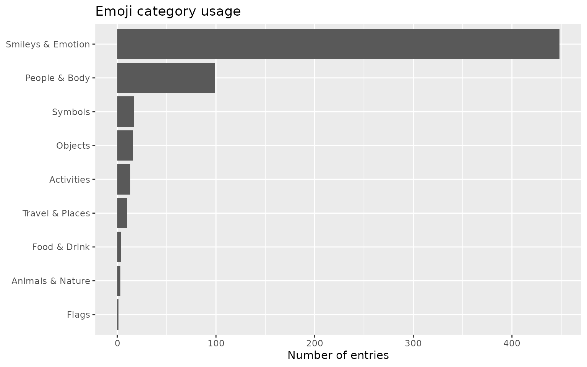
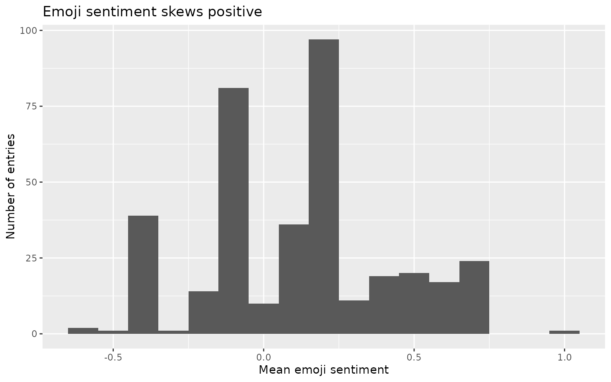
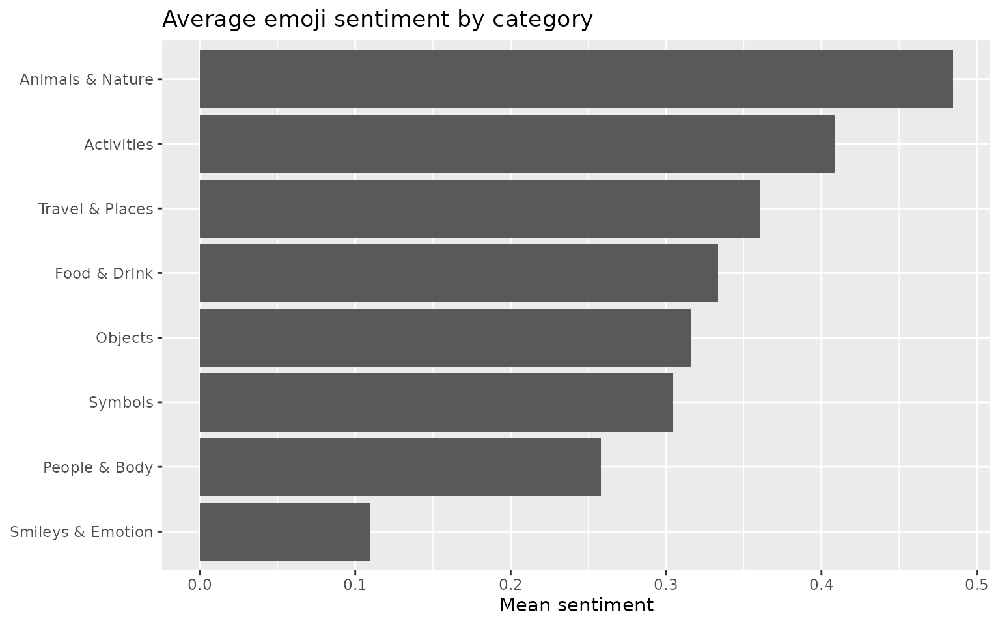

Introduction to tidyEmoji
Youzhi
Yu
University of
Chicago
2026-06-17
Source:vignettes/introduction.Rmd
introduction.RmdOverview
Emoji are everywhere in modern text — social-media posts, product reviews, chat and support logs, survey free-text — and they carry information that plain words do not. Yet summarising emoji from a corpus is surprisingly awkward. Unicode does not interact cleanly with regular expressions, not every code point is an emoji, and a single visible emoji is often built from several code points joined together. Counting “how many posts contain an emoji” or “which emoji are most common” by hand quickly becomes painful.
tidyEmoji removes that friction. It provides a small
family of verbs that take a data frame and the name of a text column,
and return tidy data frames that drop straight into a
dplyr/ggplot2 workflow:
| Task | Function(s) |
|---|---|
| Summarise / filter |
emoji_summary(), emoji_filter()
|
| Extract |
emoji_extract_nest(),
emoji_extract_unnest(), emoji_tokens()
|
| Count |
emoji_frequency(), top_n_emojis()
|
| Categorise | emoji_categorize() |
| Score sentiment | emoji_sentiment() |
Two design choices are worth highlighting:
- Grapheme-aware detection. Detection is performed on whole grapheme clusters, so skin-tone modifiers (👍🏽) and zero-width-joiner sequences such as the family emoji (👨👩👧👦) are treated as a single emoji rather than being split into their component parts. This is illustrated in the extraction section.
-
Tidy by default. Every verb returns a tibble,
follows the
verb(data, text_column)convention, and supports unquoted column names, so the functions compose naturally with the pipe.
Example data
Throughout this vignette we use a sample of 10,000 tweets collected in Atlanta, Georgia. Tweets are a convenient, emoji-rich example, but nothing below is specific to Twitter — any data frame with a text column will do.
ata_tweets <- readr::read_csv("ata_tweets.rda", show_col_types = FALSE)
ata_tweets
#> # A tibble: 10,000 × 1
#> full_text
#> <chr>
#> 1 "im not arguing im not fighting nobody w a gun. people are dying every day …
#> 2 "Time left until rump leaves office\nZoom\n56days\n1349hours\n80940minutes\n…
#> 3 "It’s been 15 years since my father’s imprisonment I swore it would get eas…
#> 4 "Friendsgiving with my roomies🥰"
#> 5 "Going to be one of those “countdown app” people just so I have motivation t…
#> 6 "When I can turn my philosophical thoughts into poetry. The world gone be on…
#> 7 "These females really be trying it but fail to realize my girl tells me ever…
#> 8 "why my sister called me toxic lmao"
#> 9 "What a great year to be not taking care of no kids."
#> 10 "definitely don’t see any children in my near future, not with me trying to …
#> # ℹ 9,990 more rowsThe actual text lives in the full_text column, which is
the column we pass to each tidyEmoji verb.
Detecting and summarising emoji
emoji_summary()
emoji_summary() answers the first question one usually
asks of a new corpus: how much emoji is in here? It returns a
one-row tibble with the number of entries that contain at least one
emoji and the total number of entries. An entry is counted once
regardless of how many emoji it holds.
summary_tbl <- ata_tweets %>%
emoji_summary(full_text)
summary_tbl
#> # A tibble: 1 × 2
#> emoji_tweets total_tweets
#> <int> <int>
#> 1 2818 10000Here, 2,818 of the 10,000 tweets (28.2%) contain at least one emoji.
emoji_filter()
emoji_filter() keeps only the rows whose text contains
at least one emoji, preserving every original column. This is useful
when you want to compare emoji-bearing and emoji-free text, or restrict
an analysis to the emoji subset. (emoji_tweets() is a
synonym retained for backward compatibility.)
ata_tweets %>%
emoji_filter(full_text)
#> # A tibble: 2,818 × 1
#> full_text
#> <chr>
#> 1 It’s been 15 years since my father’s imprisonment I swore it would get easi…
#> 2 Friendsgiving with my roomies🥰
#> 3 When I can turn my philosophical thoughts into poetry. The world gone be on …
#> 4 I always get the last laugh 🥰 so I let people do what they want
#> 5 One thing about me, imma keep that same energy. 🙃
#> 6 I’m really dope. 😎
#> 7 I miss my bb🥺
#> 8 Got half of bae and raidens Christmas shopping done 😩🙌🏽🙌🏽
#> 9 Y’all be letting anybody in the studio and ion like dat🥴
#> 10 Sometimes I need to work on myself before I can please anyone or get ready f…
#> # ℹ 2,808 more rowsExtracting emoji
tidyEmoji offers three complementary ways to pull the emoji out of text, depending on the shape of output you want.
emoji_extract_nest()
emoji_extract_nest() leaves the data unchanged except
for an added list-column, .emoji_unicode, holding the emoji
found in each row. The original data structure is preserved, which makes
this convenient as an intermediate step.
ata_tweets %>%
emoji_extract_nest(full_text) %>%
select(full_text, .emoji_unicode)
#> # A tibble: 10,000 × 2
#> full_text .emoji_unicode
#> <chr> <list>
#> 1 "im not arguing im not fighting nobody w a gun. people are d… <chr [0]>
#> 2 "Time left until rump leaves office\nZoom\n56days\n1349hours\… <chr [0]>
#> 3 "It’s been 15 years since my father’s imprisonment I swore i… <chr [1]>
#> 4 "Friendsgiving with my roomies🥰" <chr [1]>
#> 5 "Going to be one of those “countdown app” people just so I ha… <chr [0]>
#> 6 "When I can turn my philosophical thoughts into poetry. The w… <chr [1]>
#> 7 "These females really be trying it but fail to realize my gir… <chr [0]>
#> 8 "why my sister called me toxic lmao" <chr [0]>
#> 9 "What a great year to be not taking care of no kids." <chr [0]>
#> 10 "definitely don’t see any children in my near future, not wit… <chr [0]>
#> # ℹ 9,990 more rows
emoji_extract_unnest()
emoji_extract_unnest() returns a long, tidy table with
one row per (entry, emoji) pair: row_number records the
position of the entry in the data, .emoji_unicode is the
emoji, and .emoji_count is how many times that emoji occurs
in that entry. Entries without emoji are dropped.
emoji_per_tweet <- ata_tweets %>%
emoji_extract_unnest(full_text)
emoji_per_tweet
#> # A tibble: 3,519 × 3
#> row_number .emoji_unicode .emoji_count
#> <int> <chr> <int>
#> 1 3 😩 1
#> 2 4 🥰 1
#> 3 6 👌🏾 1
#> 4 11 🥰 1
#> 5 12 🙃 1
#> 6 15 😎 1
#> 7 17 🥺 1
#> 8 33 😩 1
#> 9 33 🙌🏽 2
#> 10 34 🥴 1
#> # ℹ 3,509 more rowsWe can use this to plot how many emoji each emoji-bearing tweet contains:
emoji_per_tweet %>%
group_by(row_number) %>%
summarise(n_emoji = sum(.emoji_count)) %>%
ggplot(aes(n_emoji)) +
geom_bar() +
scale_x_continuous(breaks = seq(1, 15)) +
labs(x = "Number of emoji in the tweet",
y = "Number of tweets",
title = "Most emoji tweets contain a single emoji")
The overwhelming majority of emoji tweets carry just one emoji, with a long, thin tail of more emoji-heavy tweets.
emoji_tokens()
emoji_tokens() produces a “one row per emoji occurrence”
table — the emoji analogue of a tidy-text token table. It keeps the
original columns and adds the glyph (.emoji) together with
its name (.emoji_name), category
(.emoji_category) and sentiment score
(.emoji_sentiment). This single call gives you everything
needed for counting, joining and plotting.
ata_tweets %>%
emoji_tokens(full_text)
#> # A tibble: 4,611 × 5
#> full_text .emoji .emoji_name .emoji_category .emoji_sentiment
#> <chr> <chr> <chr> <chr> <dbl>
#> 1 It’s been 15 years since… 😩 weary face Smileys & Emot… -0.368
#> 2 Friendsgiving with my ro… 🥰 smiling fa… Smileys & Emot… NA
#> 3 When I can turn my philo… 👌🏾 OK hand: m… People & Body NA
#> 4 I always get the last la… 🥰 smiling fa… Smileys & Emot… NA
#> 5 One thing about me, imma… 🙃 upside-dow… Smileys & Emot… NA
#> 6 I’m really dope. 😎 😎 smiling fa… Smileys & Emot… 0.493
#> 7 I miss my bb🥺 🥺 pleading f… Smileys & Emot… NA
#> 8 Got half of bae and raid… 😩 weary face Smileys & Emot… -0.368
#> 9 Got half of bae and raid… 🙌🏽 raising ha… People & Body NA
#> 10 Got half of bae and raid… 🙌🏽 raising ha… People & Body NA
#> # ℹ 4,601 more rowsA note on grapheme-aware detection
Modern emoji are frequently composed of several code points: a base emoji plus a skin-tone modifier, or several emoji joined by zero-width joiners. tidyEmoji detects emoji at the level of grapheme clusters, so these stay intact. The example below contains exactly two emoji — one family and one thumbs-up — and tidyEmoji counts them as such rather than splitting the family into four people or separating the thumb from its skin tone:
demo <- data.frame(
text = c("our family \U0001F468\U0001F469\U0001F467\U0001F466",
"great work \U0001F44D\U0001F3FD")
)
demo %>%
emoji_extract_unnest(text)
#> # A tibble: 2 × 3
#> row_number .emoji_unicode .emoji_count
#> <int> <chr> <int>
#> 1 1 👨👩👧👦 1
#> 2 2 👍🏽 1Counting emoji across the corpus
emoji_frequency()
emoji_frequency() counts how often each emoji appears
across the whole text column (an entry containing the same emoji twice
contributes 2) and returns the result sorted by descending count,
annotated with each emoji’s name, shortcode and category.
ata_tweets %>%
emoji_frequency(full_text)
#> # A tibble: 423 × 5
#> emoji name shortcode group n
#> <chr> <chr> <chr> <chr> <int>
#> 1 😂 face with tears of joy joy Smil… 766
#> 2 😭 loudly crying face sob Smil… 536
#> 3 🤣 rolling on the floor laughing rofl Smil… 182
#> 4 😩 weary face weary Smil… 170
#> 5 🥺 pleading face pleading_face Smil… 148
#> 6 🥴 woozy face woozy_face Smil… 136
#> 7 🥰 smiling face with hearts smiling_face_with_three_hear… Smil… 106
#> 8 🙄 face with rolling eyes roll_eyes Smil… 83
#> 9 💯 hundred points 100 Smil… 78
#> 10 ❤️ red heart heart Smil… 66
#> # ℹ 413 more rows
top_n_emojis()
When you only need the leaders, top_n_emojis() is a
convenience wrapper around emoji_frequency() that returns
the n most frequent emoji (default
n = 20).
top_20_emojis <- ata_tweets %>%
top_n_emojis(full_text)
top_20_emojis
#> # A tibble: 20 × 4
#> emoji_name unicode emoji_category n
#> <chr> <chr> <chr> <int>
#> 1 joy 😂 Smileys & Emotion 766
#> 2 sob 😭 Smileys & Emotion 536
#> 3 rofl 🤣 Smileys & Emotion 182
#> 4 weary 😩 Smileys & Emotion 170
#> 5 pleading_face 🥺 Smileys & Emotion 148
#> 6 woozy_face 🥴 Smileys & Emotion 136
#> 7 smiling_face_with_three_hearts 🥰 Smileys & Emotion 106
#> 8 roll_eyes 🙄 Smileys & Emotion 83
#> 9 100 💯 Smileys & Emotion 78
#> 10 heart ❤️ Smileys & Emotion 66
#> 11 thinking 🤔 Smileys & Emotion 62
#> 12 heart_eyes 😍 Smileys & Emotion 59
#> 13 unamused 😒 Smileys & Emotion 52
#> 14 bangbang ‼️ Symbols 45
#> 15 relieved 😌 Smileys & Emotion 44
#> 16 eyes 👀 People & Body 42
#> 17 pensive 😔 Smileys & Emotion 41
#> 18 partying_face 🥳 Smileys & Emotion 40
#> 19 tired_face 😫 Smileys & Emotion 39
#> 20 sparkles ✨ Activities 37Plotting the top 20, coloured by category, gives an immediate sense of how the community expresses itself:
top_20_emojis %>%
mutate(emoji_name = stringr::str_replace_all(emoji_name, "_", " "),
emoji_name = forcats::fct_reorder(emoji_name, n)) %>%
ggplot(aes(n, emoji_name, fill = emoji_category)) +
geom_col() +
labs(x = "Count",
y = NULL,
fill = "Category",
title = "The 20 most frequent emoji")
The unicode column holds the actual glyph, should you
wish to render the emoji themselves on a plot (this requires a graphics
device with an emoji-capable font). You can also request a different
number of emoji:
ata_tweets %>%
top_n_emojis(full_text, n = 10) %>%
mutate(emoji_name = stringr::str_replace_all(emoji_name, "_", " "),
emoji_name = forcats::fct_reorder(emoji_name, n)) %>%
ggplot(aes(n, emoji_name, fill = emoji_category)) +
geom_col() +
labs(x = "Count", y = NULL, fill = "Category",
title = "The 10 most frequent emoji")
Categorising emoji
The Unicode standard organises emoji into 10 categories (see
?category_unicode_crosswalk).
emoji_categorize() keeps the emoji-bearing rows and adds a
.emoji_category column listing the distinct categories
present in each row, separated by | when a row spans more
than one.
ata_emoji_category <- ata_tweets %>%
emoji_categorize(full_text) %>%
select(.emoji_category)
ata_emoji_category
#> # A tibble: 2,818 × 1
#> .emoji_category
#> <chr>
#> 1 Smileys & Emotion
#> 2 Smileys & Emotion
#> 3 People & Body
#> 4 Smileys & Emotion
#> 5 Smileys & Emotion
#> 6 Smileys & Emotion
#> 7 Smileys & Emotion
#> 8 Smileys & Emotion|People & Body
#> 9 Smileys & Emotion
#> 10 Travel & Places|Activities
#> # ℹ 2,808 more rowsWe can tally the most common category combinations:
ata_emoji_category %>%
count(.emoji_category, sort = TRUE) %>%
filter(n > 20) %>%
mutate(.emoji_category = forcats::fct_reorder(.emoji_category, n)) %>%
ggplot(aes(n, .emoji_category)) +
geom_col() +
labs(x = "Number of tweets", y = NULL,
title = "Most common emoji category combinations")
To count the 10 individual categories rather than their combinations,
split the .emoji_category strings on | with
tidyr::separate_rows():
ata_emoji_category %>%
tidyr::separate_rows(.emoji_category, sep = "\\|") %>%
count(.emoji_category, sort = TRUE) %>%
mutate(.emoji_category = forcats::fct_reorder(.emoji_category, n)) %>%
ggplot(aes(n, .emoji_category)) +
geom_col() +
labs(x = "Number of tweets", y = NULL,
title = "Emoji category usage")
“Smileys & Emotion” dominates, followed by “People & Body”. Note that a tweet spanning several categories is counted once in each, so these counts can exceed the number of emoji tweets.
Scoring emoji sentiment
emoji_sentiment()
Emoji are a strong sentiment signal, and
emoji_sentiment() surfaces it directly. It adds
.emoji_n (the number of emoji in the entry) and
.emoji_sentiment (the mean sentiment of those emoji, from
-1 for negative to +1 for positive). Scores come from the bundled
emoji_sentiment_lexicon (described below); entries with no
emoji, or whose emoji are not in the lexicon, receive
NA.
ata_sentiment <- ata_tweets %>%
emoji_sentiment(full_text)
ata_sentiment %>%
select(.emoji_n, .emoji_sentiment)
#> # A tibble: 10,000 × 2
#> .emoji_n .emoji_sentiment
#> <int> <dbl>
#> 1 0 NA
#> 2 0 NA
#> 3 1 -0.368
#> 4 1 NA
#> 5 0 NA
#> 6 1 NA
#> 7 0 NA
#> 8 0 NA
#> 9 0 NA
#> 10 0 NA
#> # ℹ 9,990 more rowsSentiment distribution
Looking across the tweets that contain at least one scored emoji:
ata_sentiment %>%
filter(!is.na(.emoji_sentiment)) %>%
ggplot(aes(.emoji_sentiment)) +
geom_histogram(binwidth = 0.1) +
labs(x = "Mean emoji sentiment",
y = "Number of tweets",
title = "Emoji sentiment skews positive")
As is typical of social-media text, emoji sentiment leans strongly positive.
Sentiment by category
Because emoji_tokens() attaches a sentiment score to
every emoji occurrence, we can summarise average sentiment by category
in a couple of lines:
ata_tweets %>%
emoji_tokens(full_text) %>%
group_by(.emoji_category) %>%
summarise(mean_sentiment = mean(.emoji_sentiment, na.rm = TRUE),
n_scored = sum(!is.na(.emoji_sentiment))) %>%
filter(n_scored > 0) %>%
mutate(.emoji_category = forcats::fct_reorder(.emoji_category, mean_sentiment)) %>%
ggplot(aes(mean_sentiment, .emoji_category)) +
geom_col() +
labs(x = "Mean sentiment", y = NULL,
title = "Average emoji sentiment by category")
The sentiment lexicon
The scores come from emoji_sentiment_lexicon, the
Emoji Sentiment Ranking of Kralj Novak et al. (2015), computed
from around 70,000 tweets annotated in 13 European languages. You can
work with it directly — for instance, to find the most positive and most
negative reasonably common emoji:
emoji_sentiment_lexicon %>%
filter(occurrences >= 500) %>%
slice_max(sentiment_score, n = 8) %>%
select(emoji, unicode_name, occurrences, sentiment_score)
#> emoji unicode_name occurrences sentiment_score
#> 1 ❤ HEAVY BLACK HEART 8050 0.7460870
#> 2 💞 REVOLVING HEARTS 687 0.7423581
#> 3 🎉 PARTY POPPER 1125 0.7395556
#> 4 💃 DANCER 1344 0.7358631
#> 5 💙 BLUE HEART 912 0.7324561
#> 6 💖 SPARKLING HEART 1263 0.7133808
#> 7 💛 YELLOW HEART 602 0.7126246
#> 8 😘 FACE THROWING A KISS 3648 0.7017544
emoji_sentiment_lexicon %>%
filter(occurrences >= 500) %>%
slice_min(sentiment_score, n = 8) %>%
select(emoji, unicode_name, occurrences, sentiment_score)
#> emoji unicode_name occurrences sentiment_score
#> 1 😒 UNAMUSED FACE 1385 -0.37472924
#> 2 😩 WEARY FACE 1808 -0.36836283
#> 3 🔫 PISTOL 604 -0.19536424
#> 4 😡 POUTING FACE 756 -0.17328042
#> 5 😔 PENSIVE FACE 1205 -0.14605809
#> 6 😞 DISAPPOINTED FACE 532 -0.11842105
#> 7 😭 LOUDLY CRYING FACE 5526 -0.09337676
#> 8 😴 SLEEPING FACE 718 -0.08077994Bundled datasets
tidyEmoji ships three datasets, each documented with its own help page:
-
emoji_sentiment_lexicon— emoji sentiment scores from the Emoji Sentiment Ranking (see?emoji_sentiment_lexicon). -
emoji_unicode_crosswalk— one row per emoji name, mapping names / shortcodes to glyphs and categories. -
category_unicode_crosswalk— one row per Unicode category, listing its emoji.
These are regenerated from the current Unicode emoji list by the
scripts in the package’s data-raw/ directory.
References
Kralj Novak P, Smailović J, Sluban B, Mozetič I (2015). Sentiment of Emojis. PLoS ONE 10(12): e0144296. https://doi.org/10.1371/journal.pone.0144296. The Emoji Sentiment Ranking is distributed under the Creative Commons Attribution-ShareAlike 4.0 International (CC BY-SA 4.0) licence.